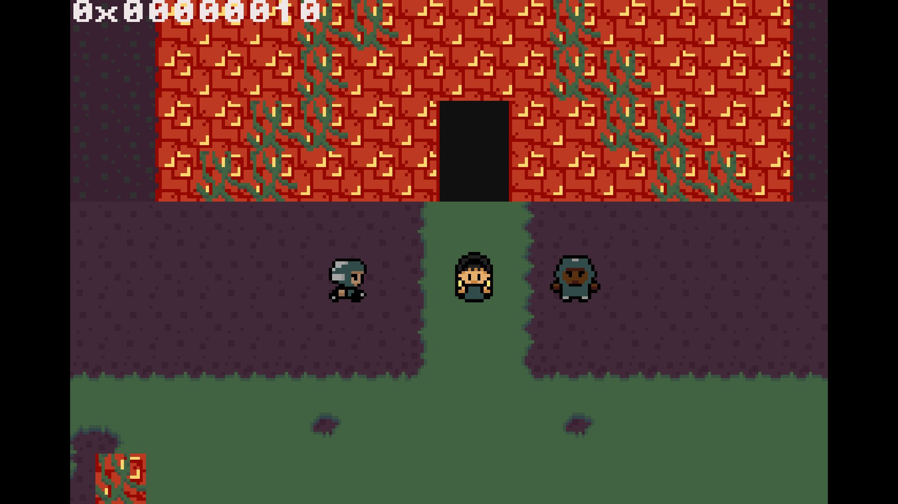
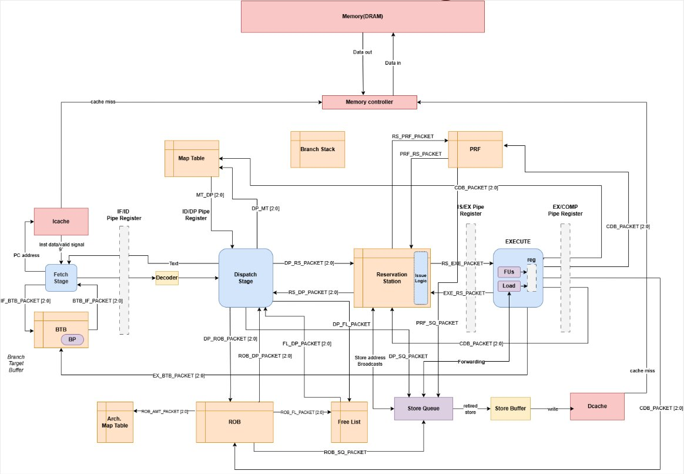
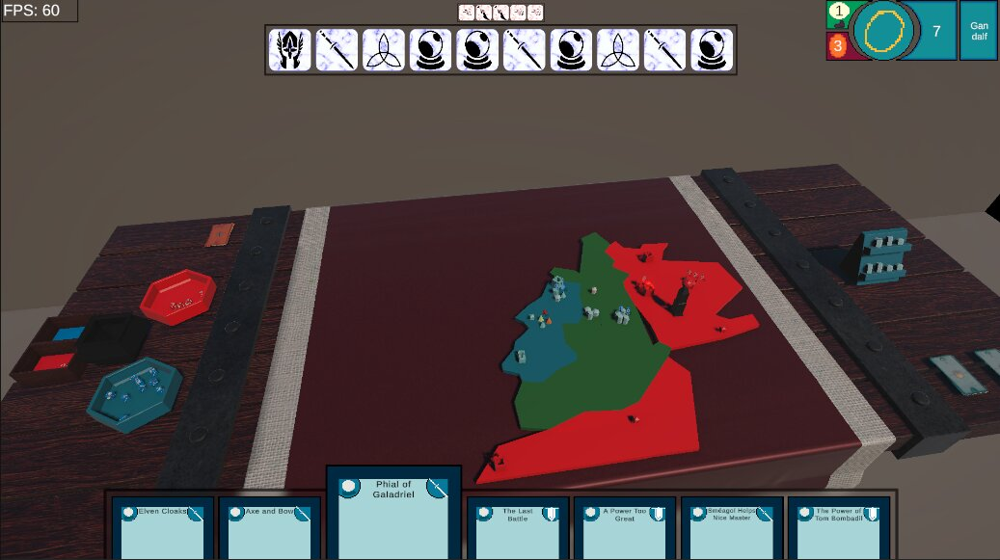
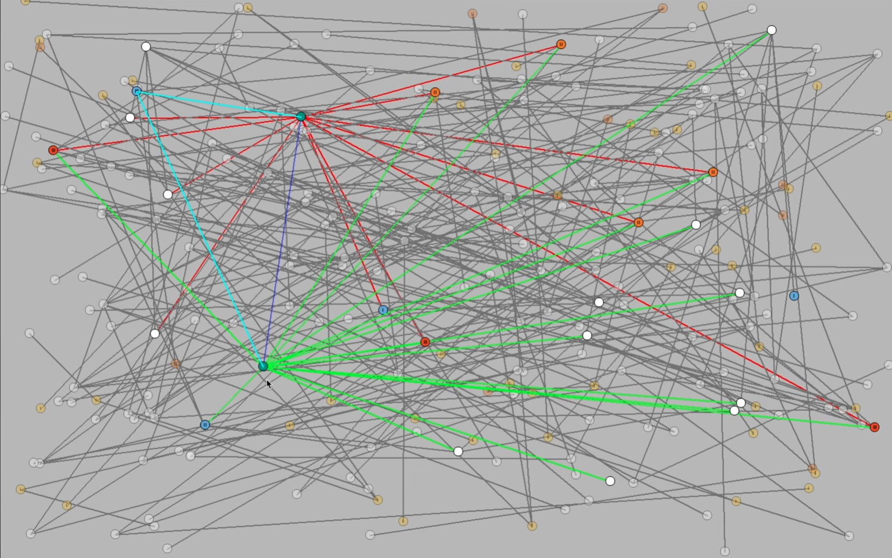

Personal Project · 2025–Present
A bare-metal game engine in C and ARM assembly for the Game Boy Advance, built without an OS.

Team Project · 2025
A 3-way superscalar, out-of-order RV32IM processor with speculative execution and precise retirement.

A networked, server-authoritative digital adaptation of the War of the Ring board game — 25,000 lines of C# in Unity.

Personal Project · 2024
A C++ Thorup–Zwick approximate distance oracle with an interactive SDL2 visualization tool.
Tooling · 2025–Present
A Python CLI asset pipeline that converts images into GBA-compatible tilesets and palette files.